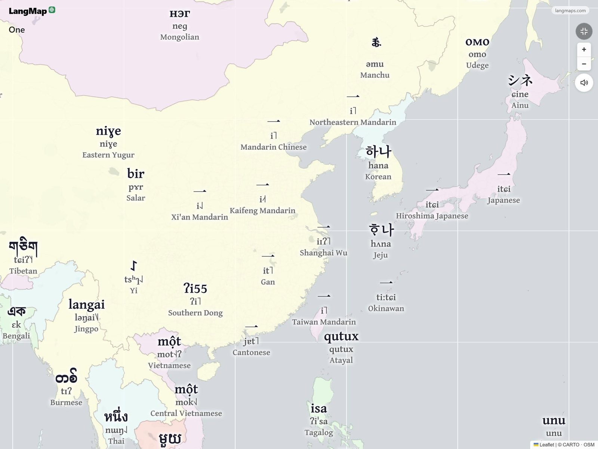

One to Ten: When Numbers Mean More Than Numbers
- The same ten Chinese characters are pronounced differently across East Asia, preserving centuries of linguistic history.
- But some numbers carry meanings far beyond arithmetic.
- One can change its name. Four can bring bad luck. And eight can be worth a fortune.

Contents
Ten characters, many voices
Look at these ten familiar characters:
一 二 三 四 五 六 七 八 九 十
In Mandarin, they are:
yī, èr, sān, sì, wǔ, liù, qī, bā, jiǔ, shí
Across East Asia, the same characters have remarkably different pronunciations.
Take 一, the simplest character of all.
Mandarin: 一 (yī)
Cantonese: 一 (jat1)
Japanese: 一 (ichi / itsu)
Korean: 일 (一) (il)
Vietnamese: 一 (nhất)
As we explored in earlier articles, these differences reflect centuries of sound change and borrowing.
Cantonese, Hokkien, Hakka, and other Chinese varieties preserve different historical pronunciation patterns.
Japanese adopted Chinese readings in several waves, producing layers known as 呉音 (Go-on) and 漢音 (Kan-on).
Korean and Vietnamese developed their own systematic Chinese-derived readings.
One particularly interesting feature is the survival of old final consonants.
Consider these three numbers:
One (一)
Mandarin: yī
Cantonese: jat1
Vietnamese: nhất
Six (六)
Mandarin: liù
Cantonese: luk6
Korean: yuk
Vietnamese: lục
Eight (八)
Mandarin: bā
Cantonese: baat3
Vietnamese: bát
The final -p, -t, and -k sounds of Middle Chinese, associated with the traditional 入聲 or "entering tone," survived in many southern Chinese varieties and in Sino-Vietnamese.
Mandarin lost these final stops.
Korean also preserves corresponding consonants, though some changed, such as historical Chinese -t becoming -l in Sino-Korean.
Different pronunciations, different historical journeys.
But the sounds of numbers have shaped much more than linguistic history.
They have influenced how people live, what they fear, and even what they are willing to pay for.
When "one" becomes something else
In Mandarin Chinese, one is normally:
一
yī
But if you listen to someone reading a telephone number, you may hear:
幺
yāo
Why?
Because yī (one) and qī (seven) can be confused over a noisy connection.
Yāo is easier to distinguish.
This practice became especially important in military and radio communications, where misunderstanding a single digit could have serious consequences.
Specialized Chinese military and radio communications take this idea even further.
To avoid confusion over noisy connections, digits from zero to nine can be read using a special set of expressions.
0: 洞 (dòng)
1: 幺 (yāo)
2: 两 (liǎng)
3: 三 (sān)
4: 四 (sì)
5: 五 (wǔ)
6: 六 (liù)
7: 拐 (guǎi)
8: 八 (bā)
9: 勾 (gōu)
Notice that not every number changes.
Only certain digits receive alternative names.
Some substitutions are memorable because they evoke the shape of the digit.
- 洞 means "hole," suggesting the shape of 0.
- 拐 means "turn" or "bend," suggesting the shape of 7.
- 勾 means "hook," suggesting the shape of 9.
Others, like 幺 for 1, make similar-sounding digits easier to distinguish.
The goal is simple: to prevent mistakes when a single misunderstood number could matter enormously.
Some of these special readings have also spread into civilian life.
For example, Chinese emergency numbers such as 110 and 119 may be read using yāo instead of yī.
But Cantonese does not ordinarily follow this Mandarin-based substitution system.
And the character 幺 has another familiar appearance in Chinese culture:
十三幺
Thirteen Orphans
A special winning hand in mahjong.
So even the number one can acquire a different name depending on where and why it is spoken.
But another number has an even stranger problem.
Its ordinary pronunciation sounds like something nobody wants to invite into their life.
Four: The number that sounds like death
In Japanese:
四 (shi) = four
死 (shi) = death
Exactly the same pronunciation.
That coincidence has made four an unlucky number in many Japanese contexts.
Some hospitals, hotels, and apartment buildings skip room numbers containing four.
The number 49 can be particularly unwelcome.
四九 (shi-ku)
死苦 (shi-ku) = death and suffering
This avoidance is sometimes called tetraphobia, the fear of the number four.
And Japan is not alone.
In Korean:
四 사 (sa) = four
死 사 (sa) = death
Again, exactly the same pronunciation.
In some Korean buildings, the fourth-floor button is marked F instead of 4.
In Mandarin:
四 (sì) = four
死 (sǐ) = death
The tones differ, but the similarity is close enough to support a widespread superstition.
Four may be avoided in telephone numbers, license plates, apartment numbers, and gifts.
Combinations such as 14 or 49 can carry additional negative associations in some regions.
Not everyone follows these superstitions, of course.
But they are widespread enough to influence real decisions.
Even modern technology has been affected.
Nokia, for example, historically avoided the 4000 series in its mobile-phone naming, reportedly because of the number four's negative associations in Asian markets.
A single syllable can influence commercial choices across entire countries.
And yet another number has achieved almost exactly the opposite reputation.
Eight: The sound of prosperity
In Mandarin:
八 (bā) = eight
發 / 发 (fā) = to prosper or become wealthy
The sounds are similar.
In Cantonese, the resemblance is even more striking.
八 (baat3) = eight
發 (faat3) = to prosper
This association has made eight a highly desirable number in many Chinese-speaking communities.
Telephone numbers and license plates containing repeated eights can sell for impressive prices.
Perhaps the most spectacular example came at the Beijing Olympics.
The opening ceremony began at:
8:08 PM, August 8, 2008
8/8/08, at 8:08.
The choice was no coincidence.
Eight had become a symbol of prosperity and good fortune on a global stage.
Other numbers carry their own associations.
- 六 (liù) can suggest that things will go smoothly.
- 九 (jiǔ) sounds like 久 (jiǔ), meaning "long-lasting," and is associated with longevity.
- 四 (sì) can evoke death and misfortune.
- 八 (bā) can suggest prosperity and wealth.
The same ten basic numerals have become a language of luck, prosperity, longevity, and misfortune.
Their cultural meaning can influence real economic decisions.
But there is one more interesting consequence of these sound associations.
In Japan, people sometimes have a choice of pronunciations.
Japan has another way to avoid four
Japanese has multiple ways to say certain numbers.
四 (4): shi / yon
七 (7): shichi / nana
九 (9): ku / kyū
The forms yon and nana come from native Japanese numerals.
The readings shi, shichi, ku, and kyū belong to Chinese-derived pronunciation traditions.
As discussed in our earlier articles, Japanese borrowed Chinese pronunciations in different historical periods.
But ordinary speakers are not thinking about ancient Chinese when choosing between these forms.
They are choosing what sounds natural, clear, or appropriate.
Yon is often preferred over shi, partly because shi sounds like death.
Nana can avoid confusion between shichi and ichi.
And kyū is commonly preferred over ku in many everyday situations.
An ancient mixture of native and borrowed numbers has given modern Japanese speakers several choices.
Those choices are shaped not only by history, but also by practical communication and cultural associations.
Ten numbers, far more than arithmetic
Look again at the ten characters:
一 二 三 四 五 六 七 八 九 十
They may seem like the simplest part of a language.
Yet even these familiar numbers carry unexpected stories.
Their pronunciations preserve centuries of historical contact between languages.
Their sounds can influence luck, architecture, telephone numbers, business decisions, and even international sporting events.
One becomes yāo when clarity matters.
Four can disappear from an elevator.
Eight can become a symbol worth paying a fortune for.
And nine can promise longevity.
The characters themselves have hardly changed.
But the meanings people attach to their sounds have continued to evolve.
So when you count from one to ten, you are not merely counting.
You are speaking numbers that carry centuries of history, culture, fear, and hope.